第 4 章 货币体系What It Is and How It Works
对应文件：
notes4.pptx｜ 页码：4-1 ~ 4-41 ｜ 共 41 页本章回答三个问题：货币是什么（定义/职能/类型）、银行如何「创造」货币、中央银行如何控制货币供给。核心工具是 M = m × B。
本章地图
| 区段 | 页码 | 内容 |
|---|---|---|
| 导论 | 4-1 ~ 4-2 | 章首、学习目标 |
| 货币概念 | 4-3 ~ 4-7 | 定义、三大职能、两类货币、货币供给与货币政策 |
| 货币度量 | 4-8 ~ 4-10 | 央行、公开市场操作、M1/M2（美国）、中国 M0/M1/M2 |
| 银行与货币创造 | 4-11 ~ 4-20 | 准备金、三个情景、存款创造、货币乘数的算术 |
| 银行资本 | 4-21 ~ 4-24 | 资本、杠杆率、资本充足要求、2008 危机 |
| 货币供给模型 | 4-25 ~ 4-29 | B、rr、cr 三个外生变量、乘数推导、练习 |
| 政策工具 | 4-30 ~ 4-32 | 公开市场操作、贴现率、法定准备金率、准备金付息 |
| 案例 | 4-33 ~ 4-38 | 量化宽松、1930 年代银行倒闭 |
| 总结 | 4-39 ~ 4-41 | 本章总结 |
4-1Chapter 4 The Monetary System
Chapter 4:
The Monetary System:
What It Is And How It Works
第 4 章
货币体系：它是什么，以及它如何运作
教师备注（原文＋译文）6 段
教师备注（原文照录）
Chapter 4 covers topics that many students will have seen in their introductory course, including: the functions, types, and measures of money; fractional reserve banking and the money multiplier; the Fed's tools for controlling the money supply; and bank runs.
As a result, you might consider a homework or quiz to get students to review these basic concepts on their own so you can use class time for the more intermediate-level material. This material includes: a more sophisticated model of the money multiplier; bank leverage and capital requirements.
The material in this chapter lends itself well to current events analysis; if you can free up class time by having students review the basics on their own, you might consider devoting class time to the discussion of current Federal Reserve policy, recent problems in banking sector, or other topical issues.
教师备注（译文）
第 4 章涵盖许多学生在原理课上已见过的内容，包括：货币的职能、类型与度量；部分准备金银行制度与货币乘数；美联储控制货币供给的工具；以及银行挤兑。
因此，你可以考虑用作业或小测验让学生自行复习这些基本概念，从而把课堂时间用于更中级的内容。这些内容包括：一个更精细的货币乘数模型；银行杠杆与资本充足要求。
本章材料很适合做时事分析；如果你能通过让学生自学基础来腾出课堂时间，可以考虑用课堂讨论当前的美联储政策、银行业近期问题或其他热点议题。
- 本章两条线：制度描述（4-3 ~ 4-24）与模型化（4-25 起的 M = m × B）。前者是复习，后者是本章真正的考点。
- 全章服务于第 5 章：货币数量论需要「M 由谁决定」的答案，本章给出。
4-2IN THIS CHAPTER, YOU WILL LEARN
| 原文 | 中文对照 |
|---|---|
| IN THIS CHAPTER, YOU WILL LEARN: | 本章你将学到： |
| The definition, functions, and types of money | 货币的定义、职能与类型 |
| How banks "create" money | 银行如何「创造」货币 |
| What a central bank is and how it controls the money supply | 中央银行是什么，以及它如何控制货币供给 |
- 三个目标对应三段：概念（4-3 ~ 4-10）→ 创造（4-11 ~ 4-24）→ 控制（4-25 ~ 4-38）。
4-3Money: Definition
| 原文 | 中文对照 |
|---|---|
| Money: Definition | 货币：定义 |
| Money is the stock of assets that can be readily used to make transactions. | 货币是能够随时用于交易的资产存量。 |
- 定义有三个关键词：存量（stock，非流量）、资产（asset，与负债相对）、随时可用（readily，即流动性）。
- 「存量」的判定见 2-17：货币是某一时点的量，不是某段时间的流量。
4-4Money: Functions
| 原文 | 中文对照 |
|---|---|
| Money: Functions | 货币：职能 |
| Medium of exchange we use it to buy stuff | 交换媒介：我们用它买东西 |
| Store of value transfers purchasing power from the present to the future | 价值储藏：把购买力从现在转移到未来 |
| Unit of account （计价单位）the common unit by which everyone measures prices and values | 计价单位：所有人用来衡量价格与价值的共同单位 |
教师备注（原文＋译文）4 段
教师备注（原文照录）
If your students have taken principles of economics, they will probably be familiar with the material on this slide.
It might be worthwhile, though, to take an extra moment to be sure that students understand that the definition of store of value (an item that transfers purchasing power from the present to the future) simply means that money retains its value over time, so you need not spend all your money as soon as you receive it. The idea should be familiar, even though Mankiw's wording is a bit more sophisticated than most other texts.
教师备注（译文）
如果你的学生学过经济学原理，他们可能熟悉这一页的内容。
不过，多花一点时间确保学生理解「价值储藏」（把购买力从现在转移到未来的物品）的定义还是值得的：它只是说货币能在一段时间内保值，所以你不必一拿到钱就全部花掉。这个概念应该是熟悉的，只是曼昆的措辞比多数教材更精细一些。
- 三大职能必须能各配一例：交换媒介（用现金买咖啡）、价值储藏（发工资后存到下月花）、计价单位（菜单上的价格）。
- 三者在通胀下表现不同：通胀侵蚀价值储藏职能，但计价单位职能仍稳定（这是第 5 章讨论通胀成本的入口）。
4-5Money: Types
| 原文 | 中文对照 |
|---|---|
| Money: Types | 货币：类型 |
| 1. Fiat money（法定货币） | 1. 法定货币 |
| has no intrinsic value | 没有内在价值 |
| example: the paper currency we use | 例：我们使用的纸币 |
| 2. Commodity money（商品货币） | 2. 商品货币 |
| has intrinsic value | 有内在价值 |
| examples: gold coins, cigarettes in P.O.W. camps | 例：金币、战俘营中的香烟 |
教师备注（原文＋译文）4 段
教师备注（原文照录）
Again, this material should be reviewed for most students.
Note: Many students have seen the film The Shawshank Redemption starring Tim Robbins and Morgan Freeman. Most of this film takes place in a prison. The prisoners have an informal "underground economy" in which cigarettes are used as money, even by prisoners who don't smoke. Students who have seen the film will better understand "commodity money" if you mention this example. Also, the textbook (p. 83) has a case study on cigarettes being used as money in POW camps during WWII.
教师备注（译文）
同样，这部分材料对多数学生来说属于复习。
注：许多学生看过由 Tim Robbins 与 Morgan Freeman 主演的电影《肖申克的救赎》。影片大部分发生在监狱里。囚犯们有一个非正式的「地下经济」，其中香烟被当作货币使用，连不吸烟的囚犯也接受它。如果你举这个例子，看过影片的学生会更好地理解「商品货币」。另外，教材第 83 页有一个二战期间战俘营用香烟作货币的案例研究。
- 判据只有一条：有没有内在价值（intrinsic value）。法币的价值来自政府法令与公众信任，商品货币的价值来自其自身用途。
- 商品货币的两个经典例子：金币与战俘营的香烟（后者说明货币可以在极端环境中自发产生）。
4-6NOW YOU TRY: Discussion Question
| 原文 | 中文对照 |
|---|---|
| NOW YOU TRY: Discussion Question | 现在你来试：讨论题 |
| Which of these are money? | 下列哪些是货币？ |
| a. Currency | a. 通货（现金） |
| b. Checks | b. 支票 |
| c. Deposits in checking accounts ("demand deposits") | c. 支票账户存款（「活期存款」） |
| d. Credit cards | d. 信用卡 |
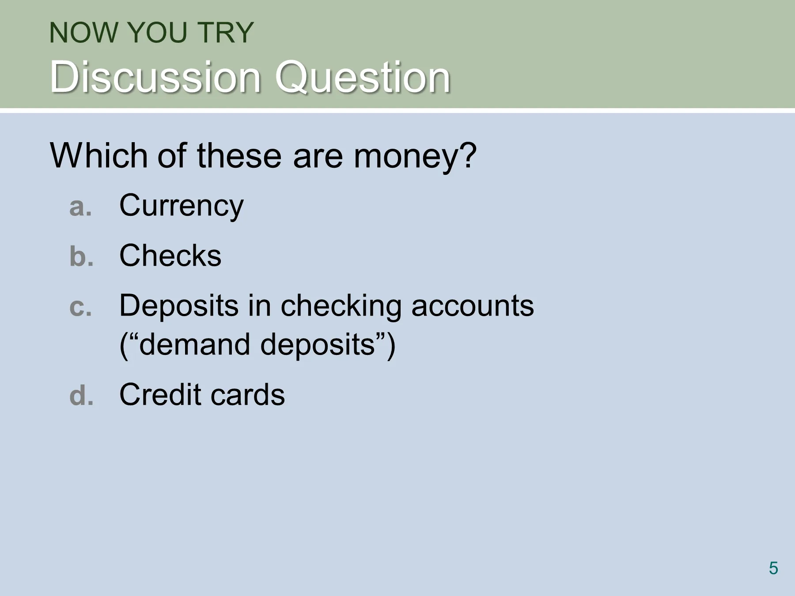
教师备注（原文＋译文）12 段
教师备注（原文照录）
Answers:
a - yes
b - no, not the checks themselves, but the funds in checking accounts are money
c - yes (see b)
d - no, credit cards are a means of deferring payment
Suggestion: Ask students to determine, for each item listed, which of the functions of money it serves.
教师备注（译文）
答案：
a — 是
b — 否，不是支票本身，但支票账户中的资金是货币
c — 是（见 b）
d — 否，信用卡是延期支付的手段
建议：让学生判断每一项分别履行了货币的哪些职能。
- 四个答案：a 是；b 否（支票只是支付指令）；c 是；d 否（信用卡是负债，不是资产）。
- 判断标准回到 4-3：是不是「可用于交易的资产存量」。支票本身不是资产，账户余额才是；信用卡是借款工具，增加的是负债。
4-7Two definitions
| 原文 | 中文对照 |
|---|---|
| Two definitions | 两个定义 |
| The money supply is the quantity of money available in the economy. | 货币供给是经济中可用的货币数量。 |
| Monetary policy is the control over the money supply. | 货币政策是对货币供给的控制。 |
教师备注（原文＋译文）2 段
教师备注（原文照录）
Again, this is mostly review.
教师备注（译文）
同样，这基本是复习。
- 两个词的区别：货币供给是「量」，货币政策是「对量的控制」。前者是变量，后者是行为。
- 这一定义为 4-25 的模型设定目标：把 M 表示成 B、rr、cr 的函数，从而说明「控制」如何实现。
4-8The central bank and monetary control
| 原文 | 中文对照 |
|---|---|
| The central bank and monetary control | 中央银行与货币控制 |
| Monetary policy is conducted by a country's central bank. | 货币政策由一国的中央银行执行。 |
| Examples are the European Central Bank (ECB) in the Eurozone, the Bank of England (BoE) in the UK, or the Federal Reserve Bank in the U.S. (FED) | 例如欧元区的欧洲中央银行（ECB）、英国的英格兰银行（BoE）、美国的美联储（FED） |
| To control the money supply, the Fed uses open market operations（公开市场操作）, the purchase and sale of government bonds. | 为控制货币供给，美联储使用公开市场操作，即买卖政府债券。 |
教师备注（原文＋译文）2 段
教师备注（原文照录）
Again, this is mostly review.
教师备注（译文）
同样，这基本是复习。
- 三家央行与三个缩写要对应：ECB（欧元区）、BoE（英国）、Fed（美国）。
- 公开市场操作是首选工具（4-30 会说明原因）：买债券 → 投放基础货币；卖债券 → 回收基础货币。
4-9Money supply measures, January 2021
| Symbol | Assets Included | Amount in January 2021 (billions of dollars) |
|---|---|---|
| C | Currency | $ 2,094.3 |
| M1 | Currency plus demand deposits, traveler's checks, and other checkable deposits | 18,105.4 |
| M2 | M1 plus retail money market mutual fund balances, saving deposits (including money market deposit accounts), and small time deposits | 19,394.6 |
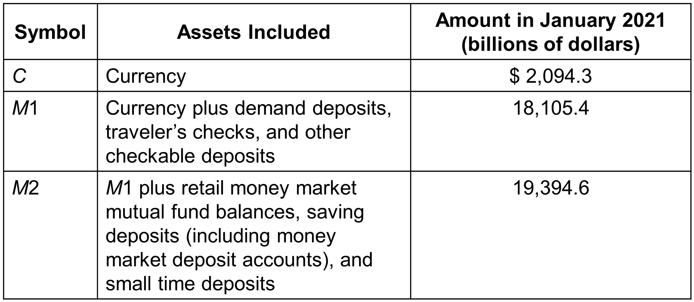
| 符号 | 包含的资产 | 2021 年 1 月金额（十亿美元） |
|---|---|---|
| C | 通货 | 2,094.3 |
| M1 | 通货 + 活期存款 + 旅行支票 + 其他可开支票存款 | 18,105.4 |
| M2 | M1 + 零售货币市场共同基金余额 + 储蓄存款（含货币市场存款账户）+ 小额定期存款 | 19,394.6 |
教师备注（原文＋译文）18 段
教师备注（原文照录）
The most important thing that students should get from this slide is that each successive measure of the money supply is BIGGER and LESS LIQUID than the one it follows. That is:
Checking account deposits (in M1 but not C) are less liquid than currency.
Money market deposit account and savings account balances (in M2 but not M1) are less liquid than demand deposits.
Note: The large increase in M1 only occurred after April 2020; before M1 was 4,799.1; another example of Covid's effect on the economy
You can point out here the ambiguity over the CDs. Only small time deposits are included.
Whether you require your students to learn the definitions of every component of each monetary aggregate is up to you. Most professors agree that students should learn the definitions of M1, M2, demand deposits, and time deposits. Some professors feel that, since the quantity of information students can learn in a semester is finite, it is not worthwhile to require students to learn such terms as "repurchase agreements." However, you might orally state the definitions of such terms to help students better understand the nature of the monetary aggregates.
Source: Federal Reserve Board, H.6 release.
http://www.federalreserve.gov/releases/h6/current/h6.htm
Figures are seasonally adjusted.
教师备注（译文）
学生应从这一页得到的最重要一点是：每一个后续的货币供给口径都比前一个更大、流动性更差。也就是说：
支票账户存款（在 M1 中但不在 C 中）比通货流动性差。
货币市场存款账户与储蓄账户余额（在 M2 中但不在 M1 中）比活期存款流动性差。
注：M1 的大幅上升只发生在 2020 年 4 月之后；此前 M1 为 4,799.1；这是新冠对经济影响的又一个例子。
这里可以指出 CDs（定期存单）的模糊之处：只有小额定期存款被计入。
是否要求学生掌握每个货币总量的每一构成项，由你决定。多数教授同意学生应掌握 M1、M2、活期存款与定期存款的定义。有些教授认为，一学期能学的内容有限，不值得要求学生学习「回购协议」这类术语。不过，你可以口头说明这些术语的定义，帮助学生更好地理解货币总量的性质。
来源：美联储理事会 H.6 公告。
http://www.federalreserve.gov/releases/h6/current/h6.htm
数据为季调值。
- 核心规律：口径越大，范围越宽、流动性越差。C ⊂ M1 ⊂ M2。
- 三个数字：C = 2,094.3；M1 = 18,105.4；M2 = 19,394.6（十亿美元，2021 年 1 月）。
- 备注的关键提示：M1 在 2020 年 4 月前只有 4,799.1，之后因监管口径调整（储蓄存款可计入 M1）与疫情刺激而激增——口径变化会造成时间序列断裂，比较跨期数据时要注意。
4-10中国的货币供应
| 原文 | 中文对照 |
|---|---|
| 中国的货币供应 | 中国的货币供应 |
| M0 = 流通中的现金 | M0 = 流通中的现金 |
| M1 = M0 + 支票存款（以及转账信用卡存款） | M1 = M0 + 支票存款（以及转账信用卡存款） |
| M2 = M1 + 储蓄存款（包括活期和定期储蓄存款） | M2 = M1 + 储蓄存款（包括活期和定期储蓄存款） |
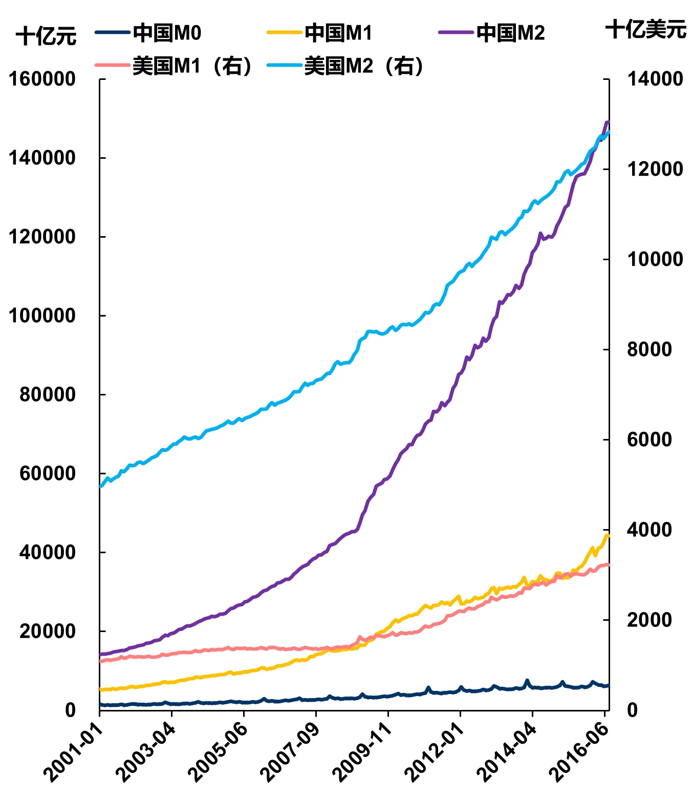
教师备注（原文＋译文）1 段
教师备注（原文照录）
来源：北京大学国家发展研究院，黄益平，《货币银行学》讲义，2016秋02：金融体系概览。
- 中国口径与美国口径的对应关系：M0 ≈ C；M1 ≈ C + 活期存款；M2 ≈ M1 + 储蓄与定期存款。中国的 M2 口径比美国更宽（含全部储蓄存款，不限于小额）。
- 图中四条序列：中国 M0、M1、M2（左轴，量级 10³–10⁴）与美国 M1、M2（右轴，量级 10³）。中国 M2 约为 M1 的 2.6 倍、M0 的 8 倍，说明中国的货币以存款为主、现金占比很低。
- 复习要点：能解释「为什么中国 M2/GDP 远高于美国」——以银行信贷为主的融资结构，使大部分交易通过存款完成。
4-11Banks' role in the monetary system
| 原文 | 中文对照 |
|---|---|
| Banks' role in the monetary system | 银行在货币体系中的作用 |
| The money supply equals currency （通货）plus demand (checking account) deposits（活期存款）: | 货币供给等于通货加活期（支票账户）存款： |
| M = C + D | M = C + D |
| Since the money supply includes demand deposits, the banking system plays an important role. | 由于货币供给包含活期存款，银行体系扮演重要角色。 |
- 这是全章的基础恒等式：M = C + D。后面所有推导都从这里出发（4-26）。
- 关键含义：银行不是「中介闲置资金」，而是存款的创造者——D 由银行体系决定，因此 M 不只由央行决定。
4-12A few preliminaries
| 原文 | 中文对照 |
|---|---|
| A few preliminaries | 几点预备知识 |
| Reserves (R)（准备金）: the portion of deposits that banks have not lent. | 准备金（R）：存款中银行未贷出的部分。 |
| A bank's liabilities include deposits; | 银行的负债包括存款； |
| assets include reserves and outstanding loans. | 资产包括准备金与未偿贷款。 |
| 100-percent-reserve banking: a system in which banks hold all deposits as reserves. | 100% 准备金银行制度：银行把全部存款都作为准备金持有的制度。 |
| Fractional-reserve banking: a system in which banks hold a fraction of their deposits as reserves. | 部分准备金银行制度：银行把一部分存款作为准备金持有的制度。 |
教师备注（原文＋译文）2 段
教师备注（原文照录）
It might be worthwhile at this point to explain why deposits are liabilities and why reserves and loans are assets.
教师备注（译文）
此时解释为什么存款是负债、为什么准备金与贷款是资产，可能是值得的。
- 资产负债表的读法：存款是银行欠储户的钱（负债），准备金与贷款是银行拥有的（资产）。
- 两种制度的分野：100% 准备金 → 银行不创造货币；部分准备金 → 银行创造货币（4-15、4-16 对比）。
4-13Banks' role in the monetary system（三个情景）
| 原文 | 中文对照 |
|---|---|
| Banks' role in the monetary system | 银行在货币体系中的作用 |
| To understand the role of banks, we will consider three scenarios: | 为理解银行的作用，我们考虑三个情景： |
| 1. No banks | 1. 没有银行 |
| 2. 100-percent-reserve banking (banks hold all deposits as reserves) | 2. 100% 准备金银行制度（银行把全部存款作为准备金持有） |
| 3. Fractional-reserve banking (banks hold a fraction of deposits as reserves, use the rest to make loans) | 3. 部分准备金银行制度（银行持有一部分存款作准备金，其余用于放贷） |
| In each scenario, we assume C = $1,000. | 每个情景都假设 C = 1,000 美元。 |
教师备注（原文＋译文）2 段
教师备注（原文照录）
Remind your students to keep in mind that M = C + D in all of the scenarios.
教师备注（译文）
提醒学生：在所有情景中都要记住 M = C + D。
- 三个情景是受控实验：唯一的差别是银行的行为，从而隔离出「银行是否创造货币」这一变量。
- 初始条件统一为 C = 1,000 美元，便于横向比较 M 的大小。
4-14SCENARIO 1: No banks
| 原文 | 中文对照 |
|---|---|
| SCENARIO 1: No banks | 情景 1：没有银行 |
| With no banks, D = 0 and M = C = $1,000. | 没有银行时，D = 0，M = C = 1,000 美元。 |
- 基准情形：M = 1,000 美元，全部是通货。
- 这个数字是后面两个情景的比较基准：若 M > 1,000，说明银行创造了货币。
4-15SCENARIO 2: 100-percent-reserve banking
| 原文 | 中文对照 |
|---|---|
| SCENARIO 2: 100-percent-reserve banking | 情景 2：100% 准备金银行制度 |
| Initially C = $1000, D = $0, M = $1,000. | 初始 C = 1,000 美元，D = 0，M = 1,000 美元。 |
| Now suppose households deposit the $1,000 at "Firstbank." | 现在假设家庭把 1,000 美元存入「第一银行」。 |
| After the deposit: C = $0, D = $1,000, M = $1,000 | 存款后：C = 0，D = 1,000 美元，M = 1,000 美元 |
| LESSON: 100%-reserve banking has no impact on size of money supply. | 结论：100% 准备金银行制度对货币供给规模没有影响。 |
| Assets | 资产 |
| Liabilities | 负债 |
| FIRSTBANK'S balance sheet | 第一银行的资产负债表 |
| reserves $1,000 | 准备金 1,000 美元 |
| deposits $1,000 | 存款 1,000 美元 |
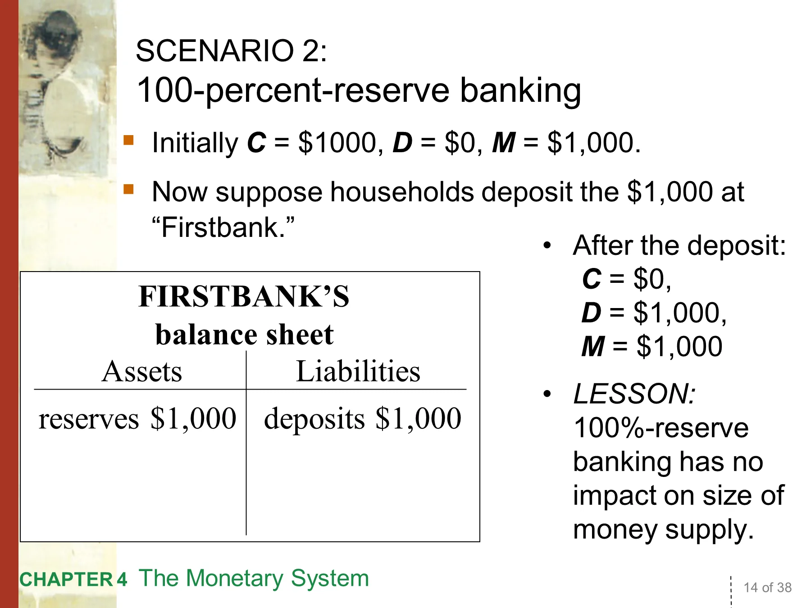
- 关键计算：存款使 C 减少 1,000、D 增加 1,000，M = C + D 不变（仍为 1,000）。
- 结论：100% 准备金制度下，银行只是「保管箱」，不创造货币。
- 资产负债表：资产（准备金 1,000）= 负债（存款 1,000），银行无自有资本、无贷款。
4-16SCENARIO 3: Fractional-reserve banking（第 1 帧）
| 原文 | 中文对照 |
|---|---|
| SCENARIO 3: Fractional-reserve banking | 情景 3：部分准备金银行制度 |
| Suppose banks hold 20% of deposits in loans with the rest. | 假设银行把存款的 20% 留作准备金，其余用于放贷。 |
| Firstbank will make $800 in loans. | 第一银行将放贷 800 美元。 |
| LESSON: In a fractional-reserve banking system, banks create money. | 结论：在部分准备金银行制度下，银行创造货币。 |
| The money supply now equals $1,800: | 货币供给现在等于 1,800 美元： |
| Depositor has $1,000 in demand deposits. | 存款人有 1,000 美元活期存款。 |
| Borrower holds $800 in currency. | 借款人手中有 800 美元通货。 |
| Assets | 资产 |
| Liabilities | 负债 |
| FIRSTBANK'S balance sheet | 第一银行的资产负债表 |
| reserves $1,000 | 准备金 1,000 美元 |
| deposits $1,000 | 存款 1,000 美元 |
| reserves $200 | 准备金 200 美元 |
| loans $800 | 贷款 800 美元 |
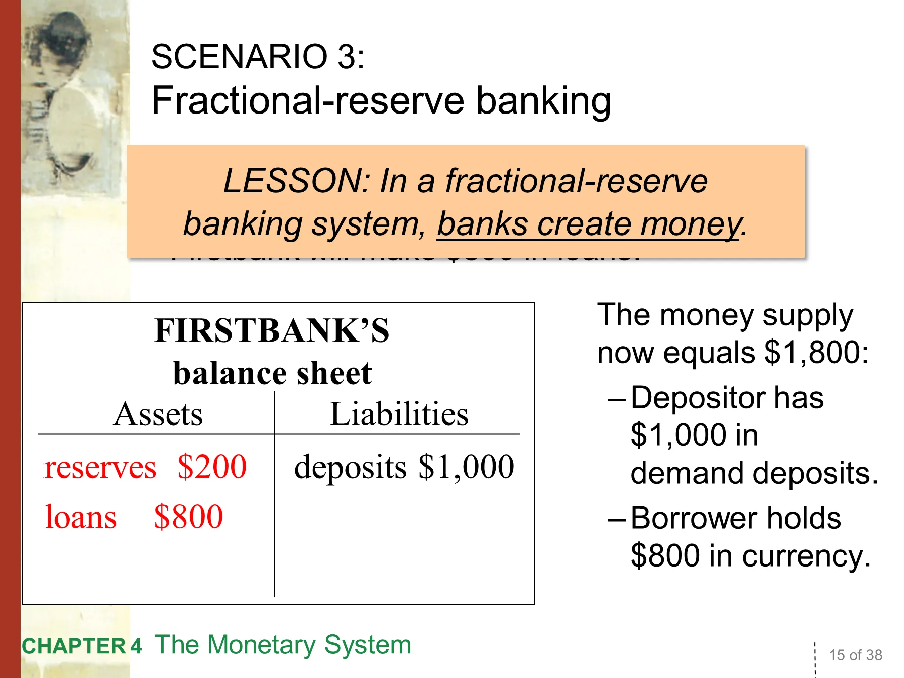
- 关键一步：C = 800（借款人持有）+ D = 1,000（存款人持有）= M = 1,800。货币凭空增加了 800。
- 注意原页表述「hold 20% of deposits in loans with the rest」有笔误（应为「hold 20% as reserves, lend the rest」）；数字上 rr = 20%、贷款 800 是自洽的，照录并指出。
- 创造的不是财富：借款人同时多了 800 美元债务（4-20）。
4-17SCENARIO 3: Fractional-reserve banking（第 2 帧）
| 原文 | 中文对照 |
|---|---|
| SCENARIO 3: Fractional-reserve banking | 情景 3：部分准备金银行制度 |
| Suppose the borrower deposits the $800 in Secondbank. | 假设借款人把 800 美元存入「第二银行」。 |
| Initially, Secondbank's balance sheet is: | 初始时，第二银行的资产负债表为： |
| Assets | 资产 |
| Liabilities | 负债 |
| Secondbank will loan 80% of this deposit. | 第二银行将把这笔存款的 80% 贷出。 |
| SECONDBANK'S balance sheet | 第二银行的资产负债表 |
| deposits $800 | 存款 800 美元 |
| reserves $800 | 准备金 800 美元 |
| loans $0 | 贷款 0 |
| reserves $160 | 准备金 160 美元 |
| loans $640 | 贷款 640 美元 |
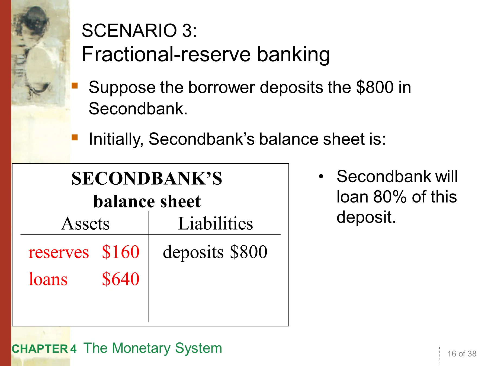
教师备注（原文＋译文）2 段
教师备注（原文照录）
Maybe the borrower deposits the $800 in the bank. Or maybe the borrower uses the money to buy something from someone else, who then deposits it in the bank. In either case, the $800 finds its way back into the banking system.
教师备注（译文）
也许借款人把这 800 美元存入银行；也许借款人用这笔钱向别人买东西，而那个人再把它存入银行。无论哪种情形，这 800 美元最终都会回到银行体系中。
- 第二轮：800 存入 → 留 20%（160）→ 贷出 80%（640）。
- 备注解释了关键假设：贷款最终会回流银行体系。若借款人把现金藏在床下（cr 上升），链条就中断（4-29）。
4-18SCENARIO 3: Fractional-reserve banking（第 3 帧）
| 原文 | 中文对照 |
|---|---|
| SCENARIO 3: Fractional-reserve banking | 情景 3：部分准备金银行制度 |
| If this $640 is eventually deposited in Thirdbank, | 如果这 640 美元最终存入「第三银行」， |
| Then Thirdbank will keep 20% of it in reserve and loan the rest out: | 那么第三银行将保留其中 20% 作准备金，其余贷出： |
| Assets | 资产 |
| Liabilities | 负债 |
| THIRDBANK'S balance sheet | 第三银行的资产负债表 |
| deposits $640 | 存款 640 美元 |
| reserves $640 | 准备金 640 美元 |
| loans $0 | 贷款 0 |
| reserves $128 | 准备金 128 美元 |
| loans $512 | 贷款 512 美元 |
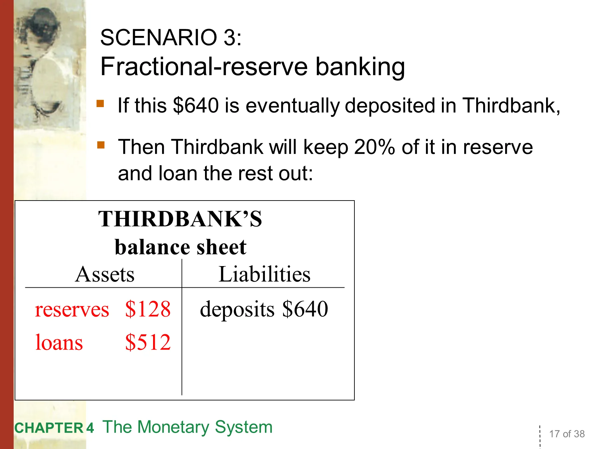
教师备注（原文＋译文）2 段
教师备注（原文照录）
Again, the person who borrowed the $640 will either deposit it in his/her own checking account or will use it to buy something from somebody who, in turn, deposits it in his/her checking account. In either case, the $640 winds up in a bank somewhere and that bank can then use it to make new loans.
教师备注（译文）
同样，借走这 640 美元的人要么把它存入自己的支票账户，要么用它向某人买东西，而那人再把它存入自己的支票账户。无论哪种情形，这 640 美元最终都会落到某家银行，那家银行又可以拿它发放新贷款。
- 第三轮：640 → 留 128 → 贷 512。每轮乘以 0.8。
- 三轮贷款序列：800、640、512，构成等比数列，公比 0.8。
4-19Finding the total amount of money
| 原文 | 中文对照 |
|---|---|
| Finding the total amount of money: | 求货币总量： |
| Original deposit = $1000 | 原始存款 = 1,000 美元 |
| + Firstbank lending = $ 800 | + 第一银行放贷 = 800 美元 |
| + Secondbank lending = $ 640 | + 第二银行放贷 = 640 美元 |
| + Thirdbank lending = $ 512 | + 第三银行放贷 = 512 美元 |
| + other lending… | + 其他银行的放贷…… |
| Total money supply = (1/rr) × $1,000 where rr = ratio of reserves to deposits （存款准备金率） | 货币总供给 =（1/rr）× 1,000 美元，其中 rr = 准备金/存款比率（存款准备金率） |
| In our example, rr = 0.2, so M = $5,000 | 在我们的例子中，rr = 0.2，所以 M = 5,000 美元 |
- 等比级数求和：1,000 × [1/(1−0.8)] = 5,000，等价于 (1/rr) × 1,000 = 5 × 1,000。
- 乘数 1/rr = 5 是「简单存款乘数」，只考虑 rr、忽略 cr 与超额准备金；4-27 的 m 是它的完整版。
- 注意 M = 5,000 是理论上限：它假设每一分贷款都回流银行、无现金漏出、无超额准备金。
4-20Money creation in the banking system
| 原文 | 中文对照 |
|---|---|
| Money creation in the banking system | 银行体系中的货币创造 |
| A fractional-reserve banking system creates money, but it doesn't create wealth: | 部分准备金银行制度创造货币，但不创造财富： |
| Bank loans give borrowers some new money | 银行贷款给借款人新的货币 |
| and an equal amount of new debt. | 以及等额的新债务。 |
- 一句话区分：货币是资产，财富是净资产。贷款同时增加资产（存款）与负债（债务），净资产不变。
- 这解释了为什么「印钞」不能让人变富——它改变的是计价单位与资产负债表规模，不是实际资源。
4-21Bank capital, leverage（杠杆）, and capital requirements
| 原文 | 中文对照 |
|---|---|
| Bank capital, leverage（杠杆）, and capital requirements | 银行资本、杠杆与资本要求 |
| Bank capital: the resources a bank's owners have put into the bank | 银行资本：银行所有者投入银行的资源 |
| A more realistic balance sheet: | 一个更现实的资产负债表： |
| Assets | Liabilities and Owners' Equity | ||
|---|---|---|---|
| Reserves | $200 | Deposits | $750 |
| Loans | 500 | Debt | 200 |
| Securities | 300 | Capital (owners' equity 所有者权益) | 50 |
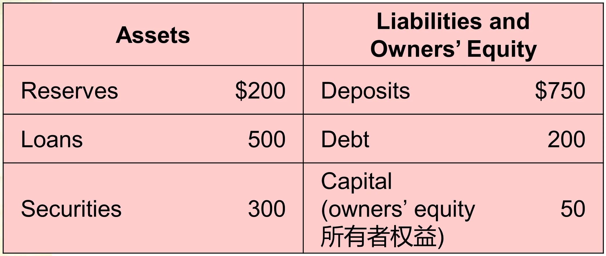
| 资产 | 负债与所有者权益 | ||
|---|---|---|---|
| 准备金 | 200 美元 | 存款 | 750 美元 |
| 贷款 | 500 | 债务 | 200 |
| 证券 | 300 | 资本（所有者权益） | 50 |
教师备注（原文＋译文）2 段
教师备注（原文照录）
This slide and the following three slides correspond to the subsection "Bank Capital, Leverage, and Capital Requirements" on pp. 90-91.
教师备注（译文）
这一页与后面三页对应教材第 90–91 页「银行资本、杠杆与资本要求」小节。
- 平衡关系：资产 200 + 500 + 300 = 1,000 = 负债 750 + 200 + 资本 50 ✓。
- 三个新科目：证券（银行持有的债券）、债务（银行发行的债券/同业借款）、资本（股东权益，= 资产 − 负债）。
- 资本是缓冲垫：资产损失先由资本吸收，资本耗尽才轮到存款人受损。
4-22Bank capital, leverage, and capital requirements（杠杆率）
| 原文 | 中文对照 |
|---|---|
| Bank capital, leverage, and capital requirements | 银行资本、杠杆与资本要求 |
| Leverage: the use of borrowed money to supplement existing funds for purposes of investment | 杠杆：为投资目的使用借来的钱补充自有资金 |
| Leverage ratio = assets/capital | 杠杆率 = 资产/资本 |
| = $(200 + 500 + 300)/$50 = 20 | =（200 + 500 + 300）/50 = 20 |
| Assets | Liabilities and Owners' Equity | ||
|---|---|---|---|
| Reserves | $200 | Deposits | $750 |
| Loans | 500 | Debt | 200 |
| Securities | 300 | Capital (owners' equity) | 50 |

教师备注（原文＋译文）2 段
教师备注（原文照录）
Banks are highly leveraged.
教师备注（译文）
银行是高杠杆的。
- 杠杆率 = 1,000/50 = 20，含义是：每 1 美元自有资本支撑 20 美元资产。
- 等价说法：资产的 95% 靠借来的钱（存款 750 + 债务 200）融资，只有 5% 是自有资金。
4-23Bank capital, leverage, and capital requirements（脆弱性）
| 原文 | 中文对照 |
|---|---|
| Bank capital, leverage, and capital requirements | 银行资本、杠杆与资本要求 |
| Being highly leveraged makes banks vulnerable. | 高杠杆使银行变得脆弱。 |
| Example: Suppose a recession causes our bank's assets to fall by 5%, to $950. | 例：假设衰退使该银行资产下降 5%，降至 950 美元。 |
| Then, capital = assets – liabilities = 950 – 950 = 0 | 那么，资本 = 资产 − 负债 = 950 − 950 = 0 |
| Assets | Liabilities and Owners' Equity | ||
|---|---|---|---|
| Reserves | $200 | Deposits | $750 |
| Loans | 500 | Debt | 200 |
| Securities | 300 | Capital (owners' equity) | 50 |
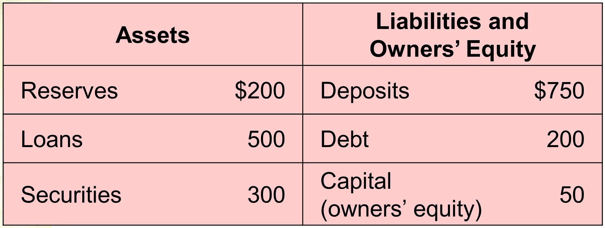
教师备注（原文＋译文）2 段
教师备注（原文照录）
Because banks are highly leveraged, a small loss of assets could wipe out bank equity.
教师备注（译文）
由于银行杠杆很高，资产的小幅损失就可能抹掉银行权益。
- 关键算术：资产 1,000 → 950（−5%），负债仍为 950，资本从 50 归零。
- 放大倍数 = 杠杆率 20：资产跌 5% ÷ 杠杆 20 = 资本跌 100%。这就是「高杠杆放大冲击」的量化表达。
- 由此引出 4-24 的资本充足要求：既然 5% 的资产损失就能清空资本，监管就必须规定最低资本比例。
4-24Bank capital, leverage, and capital requirements（监管）
| 原文 | 中文对照 |
|---|---|
| Capital requirement: | 资本要求： |
| minimum amount of capital mandated by regulators | 监管者规定的最低资本量 |
| intended to ensure banks will be able to pay off depositors | 旨在确保银行有能力偿付存款人 |
| higher for banks that hold more risky assets | 对持有更多风险资产的银行要求更高 |
| 2008-2009 financial crisis: | 2008–2009 年金融危机： |
| Losses on mortgages shrank bank capital, slowed lending, exacerbated the recession. | 抵押贷款损失使银行资本缩水，放贷放缓，加剧了衰退。 |
| Govt injected billions of dollars of capital into banks to ease the crisis and encourage more lending. | 政府向银行注入数十亿美元资本，以缓解危机并鼓励更多放贷。 |
- 三条规则：有最低资本量、目的是保护存款人、风险越高要求越高。
- 2008 年的传导链：房贷损失 → 资本缩水 → 放贷收缩 → 衰退加深（金融加速器，2A-5 讲过同一机制）。
- 政策应对：政府注资（不是贷款，而是买股权），直接补充资本而非增加负债。
4-25A model of the money supply
| 原文 | 中文对照 |
|---|---|
| A model of the money supply | 货币供给模型 |
| exogenous variables | 外生变量 |
| Monetary base（基础货币）, B = C + R | 基础货币 B = C + R |
| controlled by the central bank | 由中央银行控制 |
| Reserve-deposit ratio（存款准备金率）, rr = R/D | 准备金–存款比率 rr = R/D |
| depends on regulations & bank policies | 取决于监管与银行政策 |
| Currency-deposit ratio（通货存款比）, cr = C/D | 通货–存款比率 cr = C/D |
| depends on households' preferences | 取决于家庭的偏好 |
- 三个外生变量及各自的决定者：
| 变量 | 定义 | 由谁决定 |
|---|---|---|
| B（基础货币） | C + R | 中央银行 |
| rr（准备金率） | R/D | 监管 + 银行政策 |
| cr（通货存款比） | C/D | 家庭偏好 |
- 这三个变量把「货币供给」拆成可控部分（B）与不可控部分（rr、cr），这正是 4-32「央行无法精确控制 M」的根源。
4-26Solving for the money supply
| 原文 | 中文对照 |
|---|---|
| Solving for the money supply: | 求解货币供给： |
| where | 其中 |
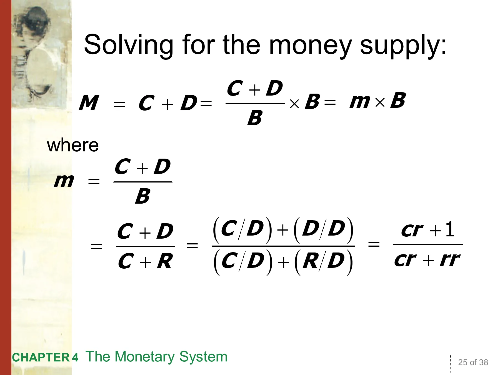
M = C + D = (C + D)/B × B = m × B
m = (C + D)/B = (C + D)/(C + R) = [(C/D) + (D/D)] / [(C/D) + (R/D)] = (cr + 1)/(cr + rr)
M = C + D =（C + D）/B × B = m × B
m =（C + D）/B =（C + D）/（C + R）=（cr + 1）/（cr + rr）
教师备注（原文＋译文）2 段
教师备注（原文照录）
The point of all this algebra is to express the money supply in terms of the three exogenous variables described on the preceding slide.
教师备注（译文）
这一串代数的目的，是用上一页所述的三个外生变量来表示货币供给。
- 推导三步：① M = C + D；② 上下同除 B（值不变）；③ 分子分母再同除 D，得到 cr 与 rr。
- 关键技巧：B = C + R = (cr + rr)·D，所以 D = B/(cr + rr)，代回 M = (cr+1)D 即得。
- 结果：M = [(cr+1)/(cr+rr)] × B，这就是全章的主公式。
4-27The money multiplier
| 原文 | 中文对照 |
|---|---|
| The money multiplier | 货币乘数 |
| where | 其中 |
| If rr < 1, then m > 1 | 若 rr < 1，则 m > 1 |
| If monetary base changes by ΔB, then ΔM = m × ΔB | 若基础货币变动 ΔB，则 ΔM = m × ΔB |
| m is the money multiplier（货币乘数）, the increase in the money supply resulting from a one-dollar increase in the monetary base. | m 是货币乘数，即基础货币每增加一美元所引起的货币供给增加量。 |
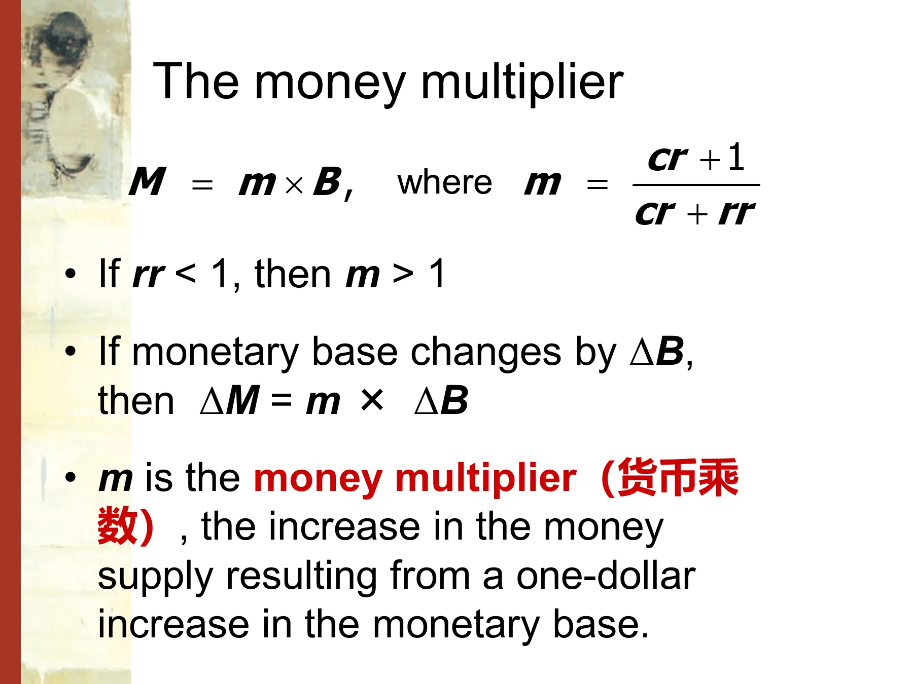
M = m × B, where m = (cr + 1)/(cr + rr)
- 为什么 rr < 1 时 m > 1：分子 cr+1 > cr+rr 当且仅当 rr < 1。
- 两个极端校验：
- rr = 1（100% 准备金）→ m = 1，银行不创造货币（与 4-15 一致）。
- cr → ∞（家庭只持现金）→ m → 1，银行体系失效。
- ΔM = m × ΔB 是政策分析的起点：央行控制 B，但 M 的变动被 m 放大或缩小。
4-28NOW YOU TRY: The money multiplier
| 原文 | 中文对照 |
|---|---|
| NOW YOU TRY: The money multiplier | 现在你来试：货币乘数 |
| where | 其中 |
| Suppose households decide to hold more of their money as currency and less in the form of demand deposits. | 假设家庭决定更多以通货、更少以活期存款的形式持有货币。 |
| Determine impact on money supply. | 判断对货币供给的影响。 |
| Explain the intuition for your result. | 解释你结论的直觉。 |
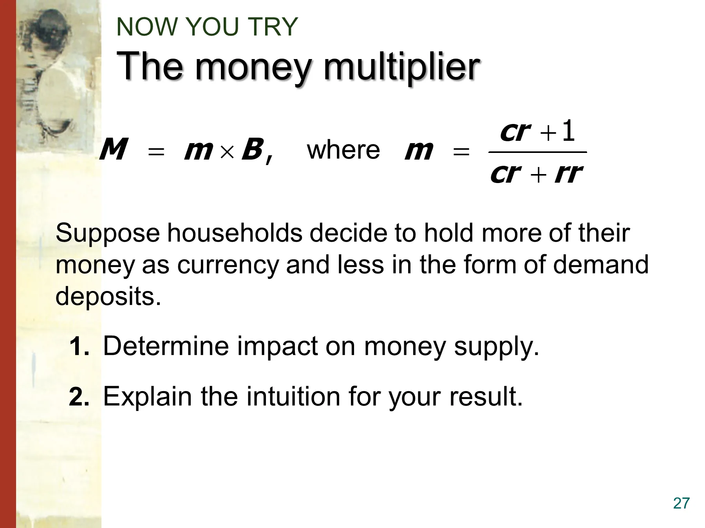
- 题目等价于问：cr 上升时 M 如何变化。答案见 4-29。
- 提示：先判断 m 的变化方向，再由 M = m × B 得 M 的变化（B 不变）。
4-29SOLUTION: The money multiplier
| 原文 | 中文对照 |
|---|---|
| SOLUTION: The money multiplier | 解答：货币乘数 |
| Impact of an increase in the currency-deposit ratio Δcr > 0. | 通货存款比上升（Δcr > 0）的影响。 |
| An increase in cr increases the denominator of m proportionally more than the numerator. So m falls, causing M to fall. | cr 上升使 m 的分母按比例增加得比分子更多。所以 m 下降，导致 M 下降。 |
| If households deposit less of their money, then banks can't make as many loans, so the banking system won't be able to create as much money. | 如果家庭存入银行的货币更少，银行能发放的贷款就更少，因此银行体系无法创造那么多货币。 |
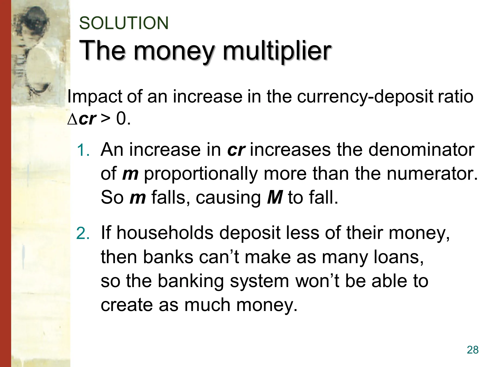
教师备注（原文＋译文）4 段
教师备注（原文照录）
Note: An increase in cr raises both the numerator and denominator of the expression for m. But since rr < 1, the denominator is smaller than the numerator, so a given increase in cr will increase the denominator proportionally more than the numerator, causing a decrease in m.
If your students know calculus, they can use the quotient rule to see that (dm/dcr) < 0.
教师备注（译文）
注：cr 上升会同时提高 m 表达式的分子与分母。但由于 rr < 1，分母小于分子，所以 cr 的既定上升会使分母按比例增加得更多，从而导致 m 下降。
如果你的学生懂微积分，可以用商法则验证 (dm/dcr) < 0。
- 结论：cr ↑ → m ↓ → M ↓（B 不变）。
- 数学理由（备注）：m = (cr+1)/(cr+rr)，分子分母都 +Δ，但分母更小，所以分母的相对增幅更大。
- 直觉：现金不进入银行就不能被反复贷出，现金漏出削弱存款创造。
4-30The instruments of monetary policy（第 1 帧）
| 原文 | 中文对照 |
|---|---|
| The instruments of monetary policy | 货币政策工具 |
| The Fed can change the monetary base using: | 美联储可以用以下方式改变基础货币： |
| open market operations (the Fed's preferred method of monetary control) | 公开市场操作（美联储偏好的货币控制方法） |
| To increase the base, the Fed could buy government bonds, paying with new dollars. | 为增加基础货币，美联储可以买入政府债券，用新创造的美元支付。 |
| the discount rate（贴现率）: the interest rate the Fed charges on loans to banks | 贴现率：美联储对银行借款收取的利率 |
| To increase the base, the Fed could lower the discount rate, encouraging banks to borrow more reserves. | 为增加基础货币，美联储可以降低贴现率，鼓励银行借入更多准备金。 |
- 两个影响 B 的工具：公开市场操作（买债券 → B↑）与贴现率（降贴现率 → 银行多借准备金 → B↑）。
- 「preferred method」的原因：公开市场操作规模可精确控制、可逆、不依赖银行行为；贴现率则取决于银行是否愿意借。
4-31The instruments of monetary policy（第 2 帧）
| 原文 | 中文对照 |
|---|---|
| The Fed can change the reserve-deposit ratio using: | 美联储可以用以下方式改变准备金–存款比率： |
| reserve requirements（法定准备金率）Fed regulations that impose a minimum reserve-deposit ratio | 法定准备金率：美联储规定的最低准备金–存款比率 |
| To reduce the reserve-deposit ratio, the Fed could reduce reserve requirements. | 为降低准备金–存款比率，美联储可以下调法定准备金率。 |
| interest on reserves: the Fed pays interest on bank reserves deposited with the Fed | 准备金付息：美联储对存放在美联储的银行准备金支付利息 |
- 两个影响 rr 的工具：法定准备金率（下调 → rr↓ → m↑）与准备金付息（提高利率 → 银行愿持更多准备金 → rr↑ → m↓）。
- 注意方向相反：降法定准备金率是扩张，提高准备金利率是收缩。这是 2008 年后新增的工具（IOER）。
4-32Why the Fed can't precisely control M
| 原文 | 中文对照 |
|---|---|
| Why the Fed can't precisely control M | 为什么美联储无法精确控制 M |
| where | 其中 |
| Households can change cr, causing m and M to change. | 家庭可以改变 cr，从而使 m 与 M 变化。 |
| Banks often hold excess reserves （超额准备金）(reserves above the reserve requirement). | 银行常持有超额准备金（超过法定要求的准备金）。 |
| If banks change their excess reserves, then rr, m, and M change. | 如果银行改变超额准备金，那么 rr、m 与 M 都会变化。 |
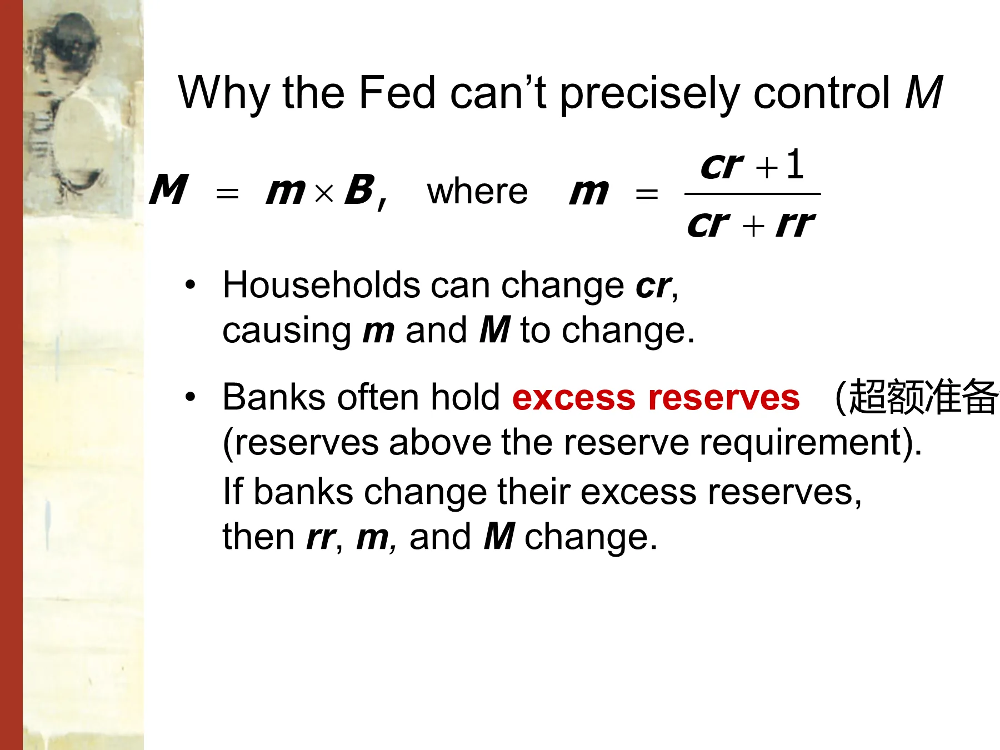
- 两个失控渠道：家庭改变 cr（4-28、4-29）与银行改变超额准备金（使实际 rr 偏离法定值）。
- 结论：央行能控制 B，但 M = m × B 中的 m 由私人部门行为决定，所以 M 只是「可影响」而非「可设定」。
- 这与 4-33 的量化宽松直接相关：B 暴增而 M 只小幅增长，正是因为 m 大幅下降。
4-33CASE STUDY: Quantitative easing（第 1 帧）
| 原文 | 中文对照 |
|---|---|
| CASE STUDY: Quantitative easing | 案例研究：量化宽松 |
| From 8/2008 to 8/2011, the monetary base tripled, but M2 grew only about 22%. | 2008 年 8 月至 2011 年 8 月，基础货币增至三倍，但 M2 只增长约 22%。 |
| From 1/2020 to 1/2021, the monetary base increased by 52%, M2 grew only about 25%. | 2020 年 1 月至 2021 年 1 月，基础货币增加 52%，M2 只增长约 25%。 |
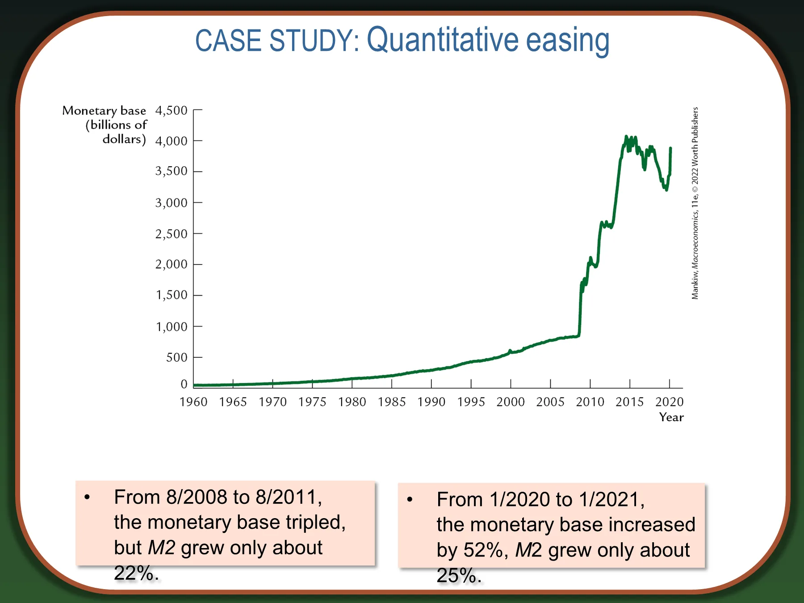
教师备注（原文＋译文）4 段
教师备注（原文照录）
Figure 4-1. This slide and the next correspond to the case study "Quantitative Easing and the Exploding Monetary Base."
For the current data (which includes M1 and M2): https://fred.stlouisfed.org/graph/fredgraph.png?g=C1NS
教师备注（译文）
图 4-1。这一页与下一页对应案例研究「量化宽松与爆炸式增长的基础货币」。
当前数据（含 M1 与 M2）：https://fred.stlouisfed.org/graph/fredgraph.png?g=C1NS
- 两组关键数字：2008/08–2011/08 基础货币 ×3，M2 仅 +22%；2020/01–2021/01 基础货币 +52%，M2 仅 +25%。
- 现象解读：B 与 M2 的增速差距 = m 下降。这正是 4-34 要解释的「钱没有流出去」。
4-34CASE STUDY: Quantitative Easing（量化宽松）
| 原文 | 中文对照 |
|---|---|
| CASE STUDY: Quantitative Easing（量化宽松） | 案例研究：量化宽松 |
| Quantitative easing: the Fed bought long-term govt bonds instead of T-bills to reduce long-term rates. | 量化宽松：美联储买入长期政府债券而非短期国库券，以压低长期利率。 |
| The Fed also bought mortgage-backed securities to help the housing market. | 美联储还购买抵押贷款支持证券，以帮助住房市场。 |
| But after losses on bad loans, banks tightened lending standards and increased excess reserves, causing money multiplier to fall. | 但在坏账损失之后，银行收紧了放贷标准并增加超额准备金，导致货币乘数下降。 |
| If banks start lending more as economy recovers, rapid money growth may cause inflation. To prevent, the Fed is considering various "exit strategies." | 如果随着经济复苏银行开始更多放贷，快速的货币增长可能引发通胀。为防止这一点，美联储在考虑各种「退出策略」。 |
| In 2020, the Fed started buying state and local government debt and corporate debt. | 2020 年，美联储开始购买州与地方政府债务以及公司债。 |
教师备注（原文＋译文）8 段
教师备注（原文照录）
Covid Lending Programs:
Municipal Lending: https://www.federalreserve.gov/monetarypolicy/muni.htm
Small and Medium Businesses: https://www.federalreserve.gov/monetarypolicy/mainstreetlending.htm
Large Corporations: https://www.federalreserve.gov/monetarypolicy/cpff.htm
教师备注（译文）
新冠贷款计划：
市政贷款：https://www.federalreserve.gov/monetarypolicy/muni.htm
中小企业：https://www.federalreserve.gov/monetarypolicy/mainstreetlending.htm
大型企业：https://www.federalreserve.gov/monetarypolicy/cpff.htm
- QE 的「非常规」之处：买长期债券（常规操作买短期国库券），目的是压低长期利率；并扩展到 MBS、市政债、公司债。
- 传导受阻的机制：银行持超额准备金 → rr 上升 → m 下降 → M 增长有限。所以 QE 扩大了 B，却没有等比例扩大 M。
- 退出风险：一旦银行恢复放贷，m 回升，若 B 不收缩则 M 会激增 → 通胀。这是「exit strategy」要解决的问题。
4-35CASE STUDY: Bank failures in the 1930s（第 1 帧）
| 原文 | 中文对照 |
|---|---|
| CASE STUDY: Bank failures in the 1930s | 案例研究：1930 年代的银行倒闭 |
| From 1929 to 1933: | 1929 至 1933 年： |
| over 9,000 banks closed | 超过 9,000 家银行倒闭 |
| money supply fell 28% | 货币供给下降 28% |
| This drop in the money supply may not have caused The Great Depression, but certainly contributed to its severity. | 货币供给的下降也许没有引发大萧条，但确实加剧了它的严重程度。 |
- 两个数字：9,000 多家银行倒闭；M 下降 28%。
- 因果表述要谨慎（原文用 "may not have caused … but certainly contributed"）：不是唯一原因，但是放大器。
4-36CASE STUDY: Bank failures in the 1930s（第 2 帧）
| 原文 | 中文对照 |
|---|---|
| CASE STUDY: Bank failures in the 1930s | 案例研究：1930 年代的银行倒闭 |
| where | 其中 |
| Loss of confidence in banks: increases cr, reduces m | 对银行失去信心：提高 cr，降低 m |
| Banks became more cautious: increases rr, reduces m | 银行变得更谨慎：提高 rr，降低 m |
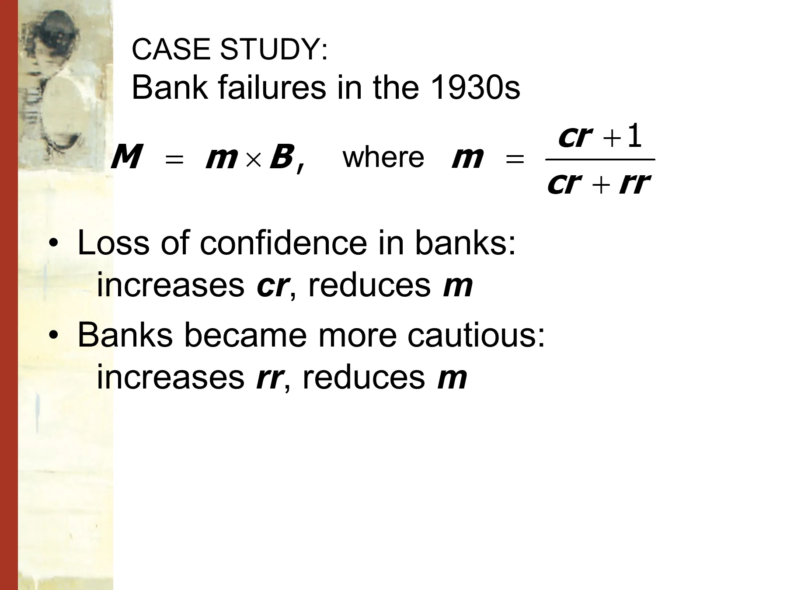
- 两条渠道同时作用，方向一致（都降低 m）：
- 信心崩溃 → 家庭挤兑、持现金 → cr ↑ → m ↓
- 银行谨慎 → 持超额准备金 → rr ↑ → m ↓
- 与 4-32 完全对应：这正是「央行无法控制 M」的历史证据。
4-37CASE STUDY: Bank failures in the 1930s（第 3 帧，数据）
| August 1929 | March 1933 | % change | |
|---|---|---|---|
| M | 26.5 | 19.0 | –28.3% |
| C | 3.9 | 5.5 | 41.0 |
| D | 22.6 | 13.5 | –40.3 |
| B | 7.1 | 8.4 | 18.3 |
| C | 3.9 | 5.5 | 41.0 |
| R | 3.2 | 2.9 | –9.4 |
| m | 3.7 | 2.3 | –37.8 |
| rr | 0.14 | 0.21 | 50.0 |
| cr | 0.17 | 0.41 | 141.2 |
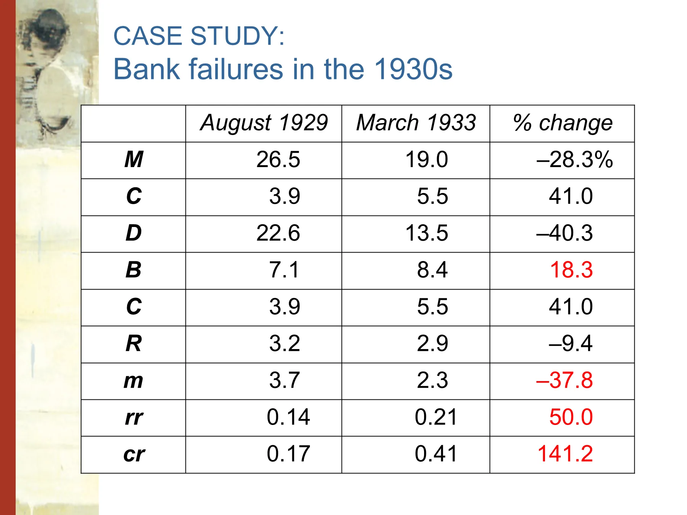
| 1929 年 8 月 | 1933 年 3 月 | 变化率（%） | |
|---|---|---|---|
| M（货币供给） | 26.5 | 19.0 | −28.3% |
| C（通货） | 3.9 | 5.5 | 41.0 |
| D（活期存款） | 22.6 | 13.5 | −40.3 |
| B（基础货币） | 7.1 | 8.4 | 18.3 |
| C（通货） | 3.9 | 5.5 | 41.0 |
| R（准备金） | 3.2 | 2.9 | −9.4 |
| m（货币乘数） | 3.7 | 2.3 | −37.8 |
| rr（准备金率） | 0.14 | 0.21 | 50.0 |
| cr（通货存款比） | 0.17 | 0.41 | 141.2 |
教师备注（原文＋译文）14 段
教师备注（原文照录）
Table 4-2, p. 99. Source: Adapted from Milton Friedman and Anna Schwartz, A Monetary History of the United States, 1867-1960 (Princeton, NJ: Princeton University Press, 1963), Appendix A.
I have added an extra column with the percent changes to the table.
I have animated the table so that the rows appear in three groups.
First group: M, C, and D, because M = C + D
Second group: B, C, and R, because B = C + R
Third group: m and its components, rr and cr
The base rises, yet the money multiplier falls so much that the money supply falls.
教师备注（译文）
表 4-2，第 99 页。来源：改编自 Milton Friedman 与 Anna Schwartz，《美国货币史，1867–1960》（普林斯顿：普林斯顿大学出版社，1963 年）附录 A。
我在表中加了一列百分比变化。
我把表格做成动画，让各行分三组出现。
第一组：M、C、D，因为 M = C + D
第二组：B、C、R，因为 B = C + R
第三组：m 及其构成 rr 与 cr
基础货币上升了，但货币乘数下降得如此之多，以致货币供给下降。
- 全表最重要的一行：B 上升 18.3%，但 m 下降 37.8%，结果 M 下降 28.3%。
- 两个分解式的校验：M = C + D（26.5 = 3.9 + 22.6；19.0 = 5.5 + 13.5 ✓）；B = C + R（7.1 = 3.9 + 3.2；8.4 = 5.5 + 2.9 ✓）。
- m 下降的分解：cr 从 0.17 升到 0.41（+141.2%）、rr 从 0.14 升到 0.21（+50%），两者共同把 m 从 3.7 压到 2.3。
- 用公式验证 m：1.17/0.31 = 3.77 ≈ 3.7 ✓；1.41/0.62 = 2.27 ≈ 2.3 ✓。
4-38Could this happen again?
| 原文 | 中文对照 |
|---|---|
| Could this happen again? | 这会再次发生吗？ |
| Many policies have been implemented since the 1930s to prevent such widespread bank failures. | 自 1930 年代以来已实施许多政策，以防止如此大范围的银行倒闭。 |
| E.g., Federal Deposit Insurance, to prevent bank runs and large swings in the currency-deposit ratio. | 例如联邦存款保险，用于防止银行挤兑与通货存款比的大幅波动。 |
- 关键机制：存款保险切断了「信心 → cr」的传导链。储户知道存款有保险，就不会挤兑，cr 不会飙升，m 不会崩塌。
- 这也解释了 4-37 的情形为何难以重演：制度变化改变了模型参数的行为。
4-39CHAPTER SUMMARY（第 1 帧）
| 原文 | 中文对照 |
|---|---|
| CHAPTER SUMMARY | 本章总结 |
| Money | 货币 |
| Definition: the stock of assets used for transactions | 定义：用于交易的资产存量 |
| Functions: medium of exchange, store of value, unit of account | 职能：交换媒介、价值储藏、计价单位 |
| Types: commodity money (has intrinsic value), fiat money (no intrinsic value) | 类型：商品货币（有内在价值）、法定货币（无内在价值） |
| Money supply controlled by central bank | 货币供给由中央银行控制 |
- 四行对应 4-3、4-4、4-5、4-7，是本篇最基础的概念清单。
4-40CHAPTER SUMMARY（第 2 帧）
| 原文 | 中文对照 |
|---|---|
| CHAPTER SUMMARY | 本章总结 |
| Fractional reserve banking creates money because each dollar of reserves generates many dollars of demand deposits. | 部分准备金银行制度创造货币，因为每一美元准备金能生成多美元活期存款。 |
| The money supply depends on the: | 货币供给取决于： |
| monetary base | 基础货币 |
| currency-deposit ratio | 通货存款比 |
| reserve ratio | 准备金率 |
| The Fed can control the money supply with: | 美联储可以用以下工具控制货币供给： |
| open market operations | 公开市场操作 |
| the reserve requirement | 法定准备金率 |
| the discount rate | 贴现率 |
| interest on reserves | 准备金付息 |
- 三要素（B、cr、rr）与四工具（公开市场、法定准备金率、贴现率、准备金付息）要能一一对应：公开市场与贴现率作用于 B；法定准备金率与准备金付息作用于 rr。
- 注意 cr 没有对应工具——央行无法直接控制家庭持币偏好，这是 M 不可精确控制的根本原因。
4-41CHAPTER SUMMARY（第 3 帧）
| 原文 | 中文对照 |
|---|---|
| CHAPTER SUMMARY | 本章总结 |
| Bank capital, leverage, capital requirements | 银行资本、杠杆、资本要求 |
| Bank capital is the owners' equity in the bank. | 银行资本是银行的所有者权益。 |
| Because banks are highly leveraged, a small decline in the value of bank assets can have a huge impact on bank capital. | 由于银行杠杆很高，银行资产价值的小幅下降就可能对银行资本造成巨大冲击。 |
| Bank regulators require that banks hold sufficient capital to ensure that depositors can be repaid. | 银行监管者要求银行持有充足资本，以确保存款人能够被偿付。 |
- 三句话的逻辑链：资本 = 缓冲 → 高杠杆放大冲击（20 倍）→ 因此需要最低资本要求。
- 数字回顾：杠杆率 20 时，资产跌 5% 即资本归零（4-23）。